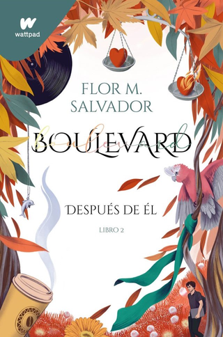
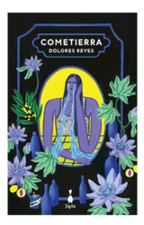
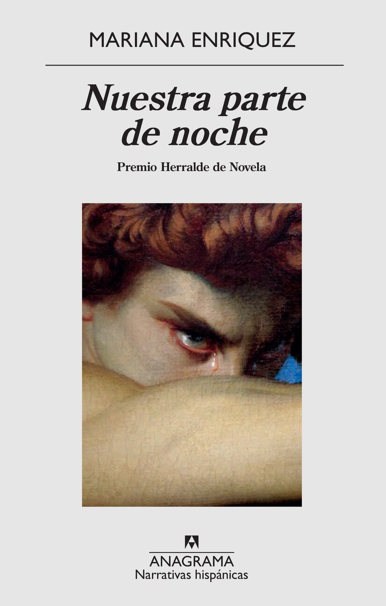
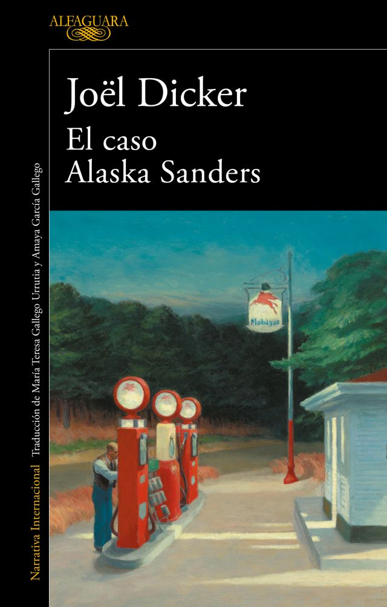

BoulevardLuke Howland; lleno de problemas y sumido en una desesperación profunda; y Hasley Weigel; tan despistada como optimista; no se ajustan al prototipo de pareja perfecta. Como si cada uno fuese un cielo; uno es tormenta y el otro; un día soleado: él es oscuridad. Ella; un rayo de sol. |

La tía CosimaCósima; un nombre para recordar. Una historia de cómo el amor vence al odio. La nueva novela de Florencia Bonelli; la escritora argentina más leída y admirada de América Latina; vuelve con una historia contemporánea donde coexisten la profesión; la amistad; el amor y un pasado doloroso. |

El monje que vendió su Ferrari.Julian toma la radical decisión de vender todas sus pertenencias y viajar a la India. Es en un monasterio del Himalaya donde aprende las sabias y profundas lecciones de los monjes sobre la felicidad; el coraje; el equilibrio y la paz interior. |

Los siete maridos de Evelyn Hugo.Evelyn Hugo; el ícono de Hollywood que se ha recluido en su edad madura; decide al fin contar la verdad sobre su vida llena de glamour y de escándalos. Pero cuando elige para ello a Monique Grant; una periodista desconocida; nadie se sorprende más que la misma Monique. ¿Por qué ella? ¿Por qué ahora? |
|

Cometierra."Me acosté en el suelo; sin abrir los ojos. Había aprendido que de esa oscuridad nacían formas. Traté de verlas y de no pensar en nada más; ni siquiera en el dolor que me llegaba desde la panza." |

Nuestra Parte de Noche.«Mariana Enriquez muestra todo y lo muestra con morbo. Ilumina con luz intermitente de velas las zonas más oscuras de la literatura argentina» |
|

El caso Alaska Sanders.«Sé lo que has hecho». Este mensaje, encontrado en el bolsillo del pantalón de Alaska Sanders, cuyo cadáver apareció el 3 de abril de 1999 al borde del lago de Mount Pleasant, es la clave de la nueva y apasionante investigación que, once años después de poner entre rejas a sus presuntos culpables. |
Violeta.La épica y emocionante historia de una mujer cuya vida abarca los momentos históricos más relevantes del siglo XX. Desde 1920 -con la llamada «gripe española»- hasta la pandemia de 2020; la vida de Violeta será mucho más que la historia de un siglo. |